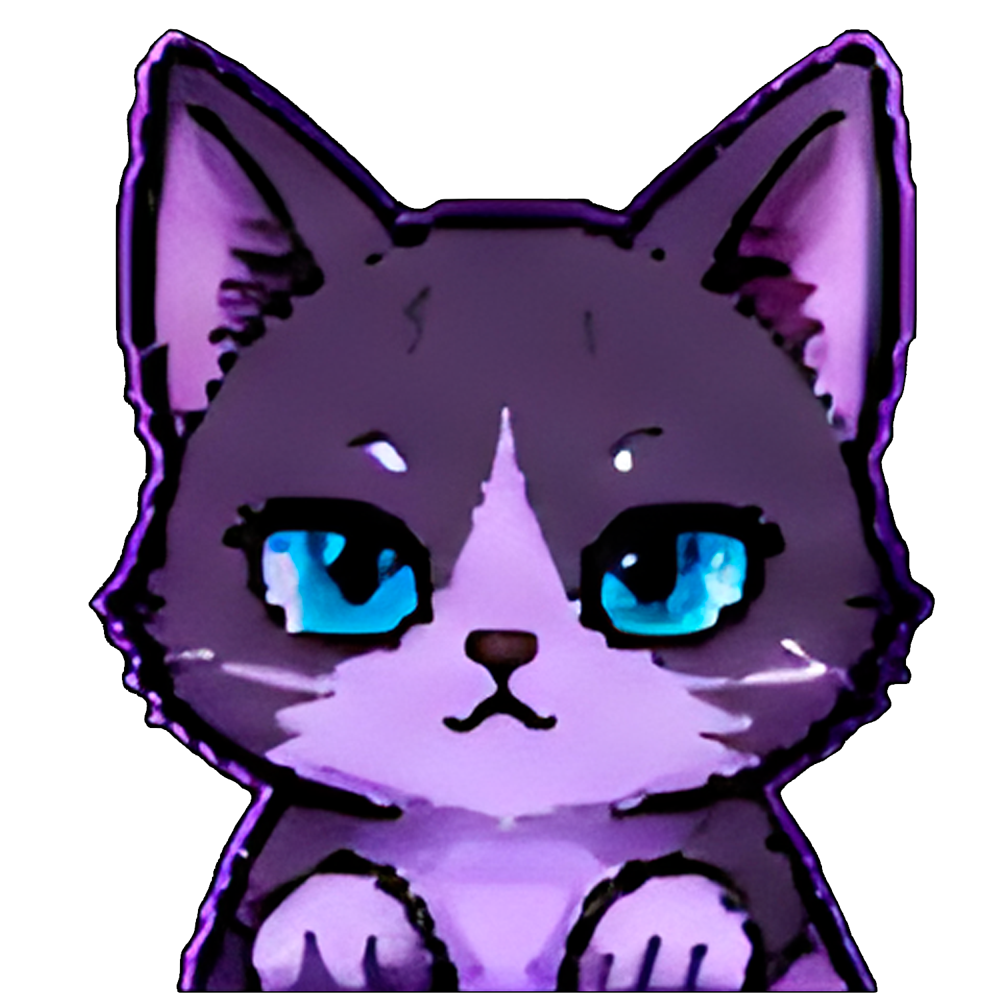

Guardião das Madrugadas e Caçador de Carinho
Floki é a energia protetora da casa. Sempre perto do teclado, pronto para checar se as linhas de código estão sendo aprovadas com o carinho adequado.
assets/images/pets/floki/